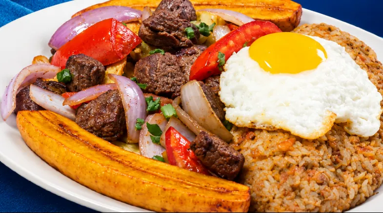
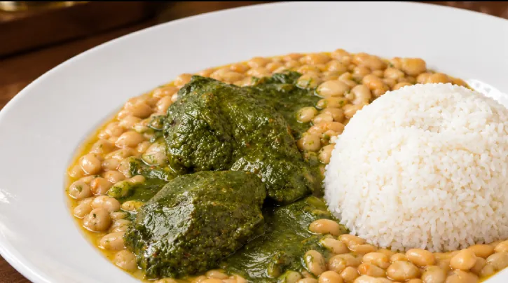
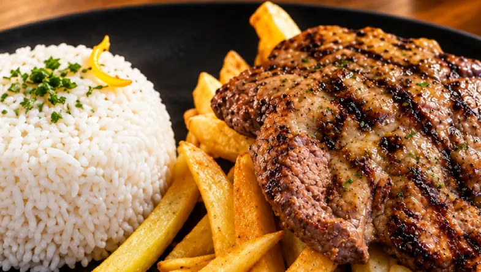
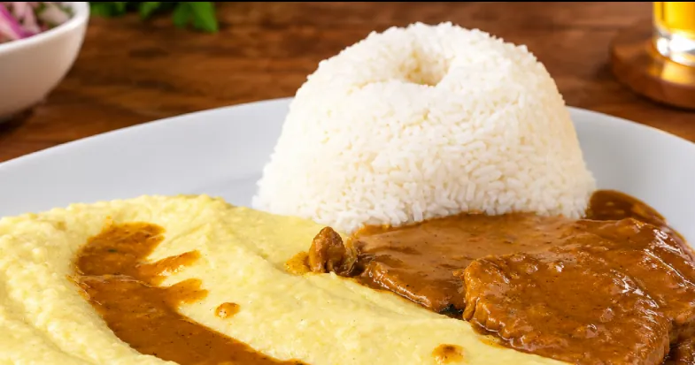
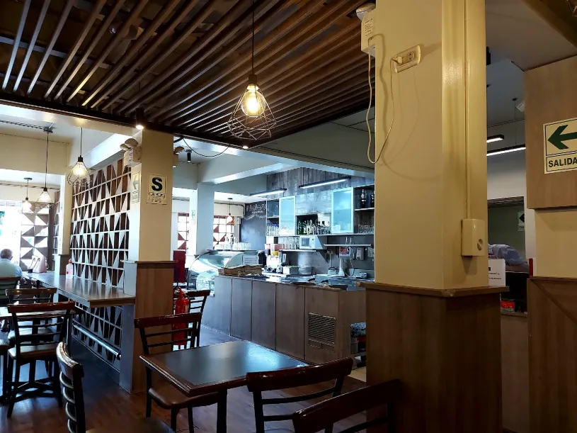

Comida criolla en Jesús María
La sazón criolla de la avenida Cuba, desde 1967
Sopas, guisos, saltados y la carta de siempre. Arma tu pedido para recoger o para delivery, o separa tu mesa: todo llega directo al WhatsApp del local.
- Todos los días de 12 m. a 9 p. m.
- Av. Cuba 1265, Jesús María

Los que más salen
Fotos del local. Toca para sumarlos a tu pedido.




La carta completa
Los mismos platos y precios de la carta impresa del local. Donde hay dos precios, elige la versión.
Entradas
- Ocopa
- Papa a la huancaína
- Causa de pollo
- Papa rellena
- Humitas / tamalito
- Ensalada mixtapalta, lechuga, tomate, cebolla, papa y zanahoria sancochadas
Piqueos
- Tequeños de lomo saltado
- Tequeños de ají de gallina
Sopas
- Sopa a la criollacon leche, huevo y pan frito
- Minuta
- A la minuta con leche
- Sustancia
- Dieta de pollo
- Sancochado “Don Bosco”
Filete de pollo
- Filete de pechuga a la plancha con arroz y papas
- Filete de pechuga a la plancha con ensalada
- Milanesa de pollo con arroz y papas
- Milanesa de pollo con ensalada
Pesca del día
- Ceviche de pescado
- Escabeche de bonito
- Combinado ceviche-chicharrón
- Sudado de cabrilla
- Cabrilla frita
Filete de pescado
- Con arroz y papas
- Con ensalada
- Encebollado
- A la chorrillana
- Apanado con arroz y papas
- A la milanesa con arroz y papas
Carne de res
- Con arroz y papas
- Con ensalada
- Encebollado
- A la chorrillana
- A lo pobre
- Con tacu tacu
- Con 1/2 porción de tacu tacu
- A la milanesa con arroz y papas
Guisos criollos
- Carapulcra (500 g)
- Cau cau (500 g)
- Chanfainita (500 g)
- Olluquito (500 g)
- Patita (500 g)
- Sangrecita (500 g)
- Combinado 2 guisos (300 g c/u)
- Combinado 3 guisos
- Combinado 4 guisos
- Combinado 5 guisos
Platos criollos
- Seco con arroz
- Seco con frijoles y arroz
- Arroz con frijoles
- Asado con arroz
- Asado con arroz y puré
- Arroz con pollo
- Arroz con pato (viernes a domingo)
- Ají de gallina
- Tacu tacu
- Arroz chaufa de pollo
- Arroz chaufa de carne
- Tallarines verdes
- Tallarines verdes con filete de pechuga
- Tallarines verdes con milanesa de pollo
- Tallarines verdes con bisteck
- Tallarines verdes con apanado
- Tallarines verdes con hígado
- Ravioles con asado
- Churrasco a lo pobre
- Escabeche de pollo
Saltados
- Lomo saltado
- Lomo saltado con tacu tacu
- Tallarín saltado con carne
- Hígado saltado
- Pollo saltado
- Tallarín saltado con pollo
- Pescado saltado (pesca del día)
Hígado
- Hígado frito con arroz y papas
- Hígado con ensalada
- Hígado encebollado
- Hígado con tacu tacu
Guarniciones
- Carapulcra (150 g)
- Cau cau (150 g)
- Chanfainita (150 g)
- Olluquito (150 g)
- Patita (150 g)
- Sangrecita (150 g)
- Papas fritas
- Arroz
- Palta
- Plátano frito
- Huevo frito
Sánguches
- Sánguche de asado
- Filete de pollo con papas
- Pan con pejerrey
Postres
- Alfajor de manjar
- Arroz con leche, mazamorra morada o combinado
- Crema volteada
- Crocante de manzana
- Leche asada
- Merengado de chirimoya
- Profiterol
- Torta de chocolate o hindú
- Tres leches
- Trifle de lúcuma
- Trifle de café
- Suspiro a la limeña
Bebidas
- Gaseosas
- Agua San Mateo
- Chicha morada de la casa (vaso)
- Chicha morada de la casa (1 litro)
- Cerveza Cristal 330 ml
- Cerveza Pilsen 310 ml
- Cusqueña Dorada 330 ml
- Cusqueña Red Lager / Trigo / Negra 330 ml
- Chilcano clásico
- Macerados de piscoaguaymanto, hierba luisa, fresa, maracuyá, maíz morado
- Shot de pisco
- Shot de anís Nájar
- Tetera de té, anís, manzanilla, menta o hierba luisa
Aceptamos dólares en billetes hasta US$20.
Separa tu mesa
Para el almuerzo familiar del domingo o la reunión de la oficina. Llenas esto y se abre WhatsApp con el mensaje listo; el local te confirma.
¿Prefieres llamar? 920 451 236 o 987 936 230
Av. Cuba 1265
Jesús María, Lima

- Horario
- Todos los días, de 12 m. a 9 p. m.
- Pedidos y reservas
- 920 451 236
987 936 230 - Teléfono fijo
- 657 2431
- Pagos
- Aceptamos dólares en billetes hasta US$20.